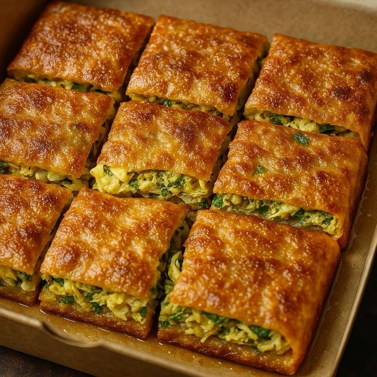

Manis & Gurih,
Dalam Satu Gigitan.
Martabak Manja menghadirkan Martabak Manis lumer dan Martabak Telor renyah, dipanggang di atas wajan panas dengan resep turun-temurun. Pesan online, bayar pakai QRIS, tinggal duduk manis menunggu jemputan kurir.

🔥 Baru MatangProses Manja, Dari Adonan ke Meja
Tonton keseruan dapur Martabak Manja selama 45 detik — mulai dari menuang adonan, memanggang di atas api sedang, hingga siap dikemas hangat untuk Anda.
Produk Terlaris / Best Seller
Rasa-rasa martabak manis yang paling sering dipesan pelanggan setia Martabak Manja.
Produk Unggulan
Martabak telor gurih dengan isian premium, pilihan terbaik untuk makan besar bersama keluarga.
Cara Bertransaksi dengan QRIS
Pastikan produk sudah masuk ke keranjang terlebih dahulu sebelum melanjutkan ke pembayaran. Ikuti empat langkah sederhana berikut.
Pilih Martabak Favorit
Jelajahi menu Best Seller atau Unggulan, lalu tekan tombol "+ Keranjang" pada produk yang diinginkan.
Cek Keranjang Belanja
Buka ikon Keranjang di navigasi untuk memastikan pesanan dan jumlahnya sudah sesuai sebelum lanjut.
Scan Kode QRIS
Pada halaman checkout, pindai kode QRIS menggunakan aplikasi e-wallet atau mobile banking apa saja.
Bayar & Konfirmasi
Selesaikan pembayaran, lalu kirim bukti transfer ke admin melalui WhatsApp untuk diproses.
Keranjang masih kosong.
Tambahkan minimal satu produk ke keranjang untuk membuka pembayaran QRIS.
Lokasi Gerai Martabak Manja
Datang langsung untuk merasakan aroma martabak fresh from the griddle, atau pesan online dan biarkan kurir kami yang mengantar.
- Alamat: Jl. Kuliner Legit No. 45, Semarang, Jawa Tengah
- Jam Operasional: Setiap hari, 15.00 – 23.00 WIB
- Telepon / WhatsApp: 0812-3456-7890